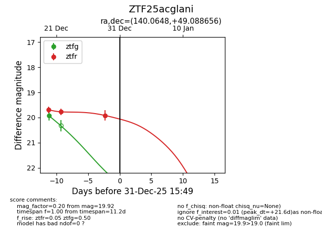
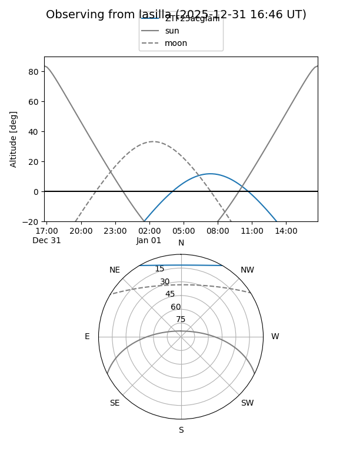
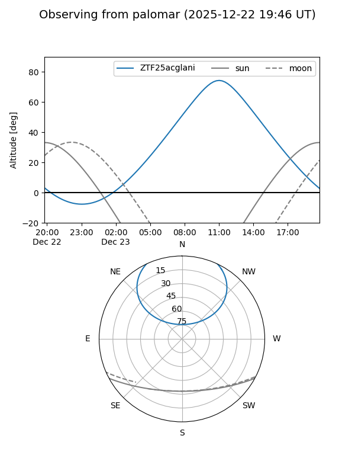

ZTF25acglani
Target ZTF25acglani at 2026-01-09 12:49
Aliases and brokers:
FINK: link
Lasair: link
ALeRCE: link
alt names
ZTF25acglani (ztf,fink_ztf)
Coordinates:
equatorial (ra, dec) = 140.0648,+49.08866
equatorial (HMS+DMS) = 09:20:15.56,+49:05:19.16
galactic (l, b) = (169.6038,+44.18909)
Flags:
Photometry:
last ztfg=19.93, ztfr=19.92
1 ztfg, 3 ztfr detections
Lightcurve

Visibility


Additional plots